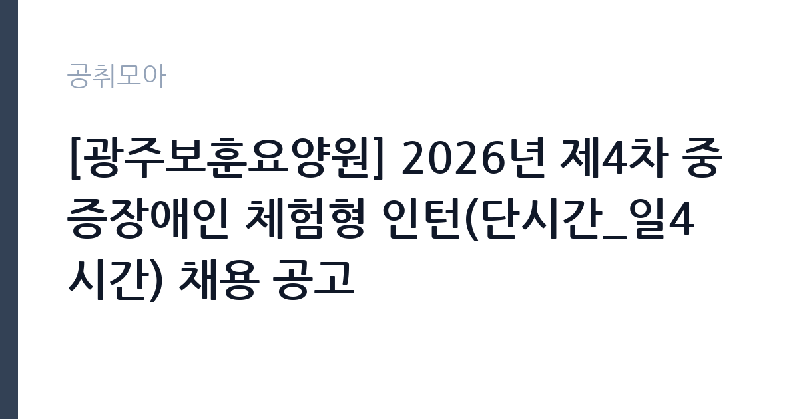

[공공기관] [광주보훈요양원] 2026년 제4차 중증장애인 체험형 인턴(단시간_일4시간) 채용 공고
한국보훈복지의료공단 · 전남광주 · 마감 2026-11-16 (D-14) · 출처 잡알리오

한눈에 보는 모집 조건
| 기관 | 한국보훈복지의료공단 |
|---|---|
| 공고명 | [광주보훈요양원] 2026년 제4차 중증장애인 체험형 인턴(단시간_일4시간) 채용 공고 |
| 고용형태 | 청년인턴(체험형) |
| 근무지 | 전남광주 |
| 게시일 | 2026-11-02 |
| 마감일 | 2026-11-16 (D-14) |
지원자격, 이렇게 읽으세요
- 계약기간 종료일까지 공단 인사규정 제44조(정년)에 따른 정년(만60세) 미만인 자
- 주5일, 일4시간 근무 가능자
- 임용예정일(2026.12.08.)부터 근무 가능한 자
체험형 인턴은 취업 준비생에게 직무 경험을 제공하는 단기 채용입니다. 근무 기간이 3개월에서 6개월로 정해져 있고 인턴료가 지급됩니다. 기관에 따라 수료증 발급이나 채용 시 가점 같은 혜택이 붙습니다. 이번 공고는 한국보훈복지의료공단이 직접 진행하는 자체 전형입니다. 체험형 인턴은 청년, 장애인, 자립준비청년 같은 대상별 전형으로 나뉘는 경우가 많습니다. 본인이 어느 전형에 해당하는지 먼저 확인해야 하며 증빙 서류가 필수입니다. 재학생과 졸업생 지원 가능 여부, 연령 기준, 타 인턴 경험 제한 조항이 자주 붙습니다. 일부 기관은 인턴 근무 경력이 있으면 재지원을 제한합니다. 근무 기간과 인턴료, 수료 요건을 공고문에서 확인하십시오. 동점자 처리 기준이 공고문에 있으니 배점 항목을 미리 확인해 두십시오. 응시 자격 판단이 애매하다면 접수 전에 채용 담당 부서로 문의하는 편이 안전합니다. 서류 제출 후에는 소명 기회가 없습니다.
이 공고의 포인트
이 공고의 첫 번째 포인트는 고용 형태입니다. 짧은 기간이지만 직무 경험과 수료 실적을 쌓을 수 있고, 기관에 따라 채용 시 가점이 붙습니다. 두 번째는 업무 범위가 명확하다는 점입니다. 체험형 인턴 직무로 채용되므로 배치 이후 담당 업무가 크게 흔들리지 않습니다. 세 번째는 근무지입니다. 전남광주 지역 근무로 수도권 공고에 비해 지원자 분포가 넓지 않아 상대적으로 경쟁이 분산되는 경우가 있습니다. 자격 요건이 까다롭지 않은 대신 지원자가 몰리는 유형의 공고입니다. 같은 직무로 함께 올라온 공고 8건 가운데 마감이 중간에 위치하므로 다른 공고와 일정이 겹치는지 확인하십시오. 선발 인원은 공고문에 명시되어 있으니 모집분야 항목을 함께 확인하십시오.
전형은 어떻게 진행되나
채용 절차는 공고문에 안내된 순서대로 진행되며, 서류 접수 마감 후에는 추가 접수나 서류 보완이 이뤄지지 않는 것이 원칙입니다. 서류심사에서는 응시자격과 제출서류의 형식 요건을 기계적으로 확인하므로, 경력 증명서의 기간과 직무 내용이 공고의 요건과 정확히 맞아야 합니다. 면접은 지원자 수에 따라 집단면접과 개별면접으로 나뉘고, 직무 관련 질문과 상황 대응 질문이 함께 나옵니다. 합격자 발표는 개별 통보 또는 홈페이지 게시로 이뤄지며 이후 임용 절차가 진행됩니다. 서류 단계에서 요건을 충족하지 못하면 이후 전형을 준비할 기회가 없으므로, 제출 전 요건 대조를 한 번 더 하는 것이 좋습니다.
원문에서 확인한 전형 방식
- 장애인고용촉진 및 직업재활법 제2조 및 시행령 제4조에 따른 중증장애인으로 한국장애인고용공단의 추천을 받은 자 - 공단 인사규정 제18조(결격사유)에 해당하지 않는 자 - 계약기간 종료일까지 공단 인사규정 제44조(정년)에 따른 정년(만60세) 미만인 자 - 주5일, 일4시간 근무 가능자 * 오전(08:30~13:00), 오후(13:00~17:30) 등 탄력운영(협의) - 임용예정일(2026.12.08.)부터 근무 가능한 자
이런 분께 추천해요
- 해당 전형의 지원 자격을 충족하는 분
- 짧은 기간에도 배우고 기여하려는 태도가 있는 분
- 기관 업무에 관심을 갖고 사전 조사를 해온 분
지원 전 체크리스트
- 응시자격 요건과 경력 기준을 충족하는가 — 경력은 증명서로 입증해야 합니다
- 인턴 기간과 수료 요건, 지원 자격 전형을 확인했는가
- 제출서류 목록을 모두 준비했는가 — 누락 시 서류 단계에서 탈락합니다
- 접수 마감 2026-11-16 이전에 접수 방식을 확인해 제출했는가
모집 일정과 제출 타이밍
접수 마감은 2026-11-16이고 공고는 2026-11-02에 게시되었습니다. 준비 기간 14일 안에 서류 작성, 증빙 발급, 접수를 모두 마쳐야 하므로 주말을 포함해 일정을 미리 나누는 것이 좋습니다. 특히 경력 기술서나 직무수행계획서를 요구하는 공고는 작성에 시간이 걸리므로 첫날 초안을 잡으십시오. 서류 합격자 발표와 면접 사이 간격이 짧은 경우가 많아 면접 예상 질문은 서류 제출 전에 정리해 두는 편이 유리합니다. 마감 직전에는 접속이 몰리므로 여유를 두고 제출하십시오. 서류 발표일과 면접일 사이가 짧은 경우가 많아 면접 준비는 접수와 동시에 시작하는 편이 좋습니다.
직무 이해하기: 공공기관
한국보훈복지의료공단은 국가유공자와 보훈대상자의 진료와 복지를 담당하는 공공기관으로, 전국에 보훈병원과 보훈요양원을 운영합니다. 병원은 진료과와 검사실, 재활·요양 부서로 나뉘고 의료기술직·기능직·업무지원직이 함께 근무합니다. 국가유공자 진료라는 기관 성격상 의료 정보와 개인정보 보호 요건이 엄격하고, 교대·당직 근무가 포함되는 자리가 많습니다. 체험형 인턴은 정해진 기간 동안 실제 부서에 배치되어 업무를 보조하며 직무를 경험하는 자리입니다. 부서에 따라 문서 작성과 자료 정리, 데이터 입력, 행사 지원, 현장 업무 보조 등을 맡습니다. 인턴 기간 중에는 직무 교육과 멘토링이 제공되는 경우가 많고 결과 보고서를 제출해야 하는 프로그램도 있습니다. 근무 기간은 3개월에서 6개월이 일반적이며, 기관에 따라 채용 연계나 서류 가점 같은 혜택이 붙습니다. 동일 직무라도 배치된 본부나 사업소에 따라 교대 방식과 업무량이 달라질 수 있습니다. 업무 강도와 근무 시간대는 부서 배치에 따라 달라지므로 면접에서 확인하는 것이 가장 정확합니다. 이 건의 근무 대상 지역·부서는 원문 기준 '단시간_일4시간'입니다.
자기소개서 작성 팁
인턴 지원서는 성장 가능성과 실행력을 보여주는 것이 핵심입니다. 부족한 경력을 감추기보다 배운 것을 빠르게 적용한 사례를 쓰십시오. 지원 기관의 사업을 조사해 구체적인 업무 아이디어를 제시하면 준비도가 드러납니다. 인턴 이후 어떤 직무로 성장하고 싶은지 방향을 밝히면 좋습니다. 직무 경험이 많지 않다면 경험의 양보다 과정을 구체적으로 쓰는 편이 낫습니다. 어떤 상황에서 무엇을 판단했고 어떤 결과가 나왔는지 순서대로 서술하면 신뢰가 생깁니다. 지원 동기와 기여 방안은 한 문단씩 짧게 유지하고, 가장 자신 있는 경험에 분량을 몰아주십시오. 마지막 문장은 포부보다 구체적인 실행 계획으로 끝내는 것이 좋습니다.
면접 준비 포인트
면접에서는 지원 동기와 배우려는 태도를 봅니다. 인턴 기간에 무엇을 얻고 싶은지 구체적으로 말할 수 있어야 하고, 학교나 아르바이트에서 맡았던 역할을 근거로 제시하면 좋습니다. 특정 업무만 하려는 인상을 주면 감점입니다. 기간이 짧다는 점을 인정하고 그 안에 무엇을 해낼 수 있는지 계획으로 답하십시오. 모르는 질문에 추측으로 답하면 감점 요인이 되므로, 확인 후 답하겠다고 밝히는 편이 안전합니다. 직무 특성상 체력이나 근무 시간에 대한 질문이 나올 수 있으므로 솔직하게 답하고 관리 계획을 함께 제시하십시오.
급여·근무조건 읽는 법
알리오(공공기관 경영정보 공개시스템) 2025년 결산 경영공시 기준으로 한국보훈복지의료공단 일반정규직 1인당 평균보수액은 7,172만원, 공시된 신입사원 초임은 4,170만원입니다. 평균보수액은 기본급에 고정수당·실적수당·성과상여금·급여성 복리후생비를 모두 합산한 값이라 월 기본급만 보고 판단하면 실제와 크게 어긋납니다. 체험형 인턴은 정규직 보수 체계가 아니라 별도 인턴료 기준을 적용받습니다. 체험형 인턴의 보수는 기관이 정한 인턴료 기준을 따르며 월급 또는 일급 형태로 지급됩니다. 인턴료에 식대나 교통비가 포함되는지 별도로 지급되는지 확인해야 합니다. 4대 보험 가입 여부와 근무 기간도 함께 확인하십시오. 구체적인 금액은 공고문에서 확인할 수 있습니다. 2026년 적용 최저임금은 시급 10,320원, 월 환산 2,156,880원(주 40시간·209시간 기준)입니다. 고용노동부 고시 제2025-47호로 확정된 금액입니다. 공고문에 금액이 제시되지 않은 항목은 원문 보수표나 처우 설명에서 확인해야 하며 확인되지 않은 수치는 쓰지 않는 것이 원칙입니다. 비교할 때는 월 급여뿐 아니라 상여·명절휴가비·복지포인트·초과근무수당까지 포함한 연간 총액으로 계산하십시오. 기간제라면 계약 기간 동안의 총액을, 무기계약이라면 호봉 상승과 정년까지의 누적 소득을 기준으로 판단하는 편이 정확합니다.
자주 묻는 질문
- 선발 인원은 몇 명인가요?
공고문의 모집분야 항목에 직종별 인원이 표로 제시되어 있습니다. 첨부된 공고문 원문에서 확인하십시오. - 근무지는 어디인가요?
전남광주 지역의 한국보훈복지의료공단 소속 근무지입니다. 세부 주소와 출퇴근 조건은 원문 공고문에서 확인할 수 있습니다. - 보수는 얼마인가요?
채용 신분(체험형 인턴)과 기관 임금 규정에 따라 정해지며 구체적인 금액은 공고문 처우 항목에 제시됩니다. 금액이 공개되지 않은 경우에는 원문의 보수표를 확인하십시오.
함께 보면 좋은 공고
[공공기관] 2026년 한국특허정보원 체험형 청년인턴 채용 — 마감 2026-11-18[공공기관] 한국폴리텍대학 진주캠퍼스 행정지원직(사무직원 휴직 대체인력) 채용 공고 — 마감 2026-11-10[공공기관] 대구경북첨단의료산업진흥재단 2026년 3차 정원외 계약직원 채용공 — 마감 2026-11-17출처: 잡알리오 공개정보를 바탕으로 공취모아가 정리한 안내글입니다. 모집 조건·일정은 변경될 수 있으니 지원 전 반드시 원문 공고문을 확인하세요. 본 글은 정보 제공용이며 합격을 보장하지 않습니다.